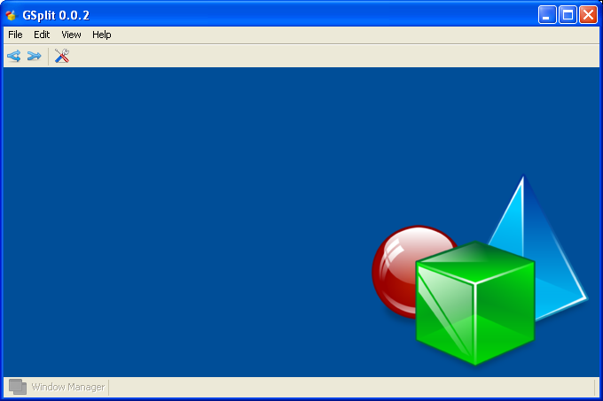

GSplit – A Java File Splitter and Joiner
Version - 0.0.1
Sabuj Das
Table of Contents
File split fundamentally is to read few blocks of a source file and creating a new file with that block. The subsequent blocks are stored in next parts, i.e. create a new file for each of the blocks. The output blocks can be re-joined to create the original file.
Input file: | 1 | 0 | 1 | 0 | 1 | 0 | 1 | 0 | 1 | 0 | 1 | 0 | 1 | 0 | 1 | 0 | 1 | 0 | 1 | …
Output parts: | 1 | 0 | 1 | 0 | | 1 | 0 | 1 | 0 | | 1 | 0 | 1 | 0 | | 1 | 0 | 1 | 0 | …
Part-0 part-1 part-2 part-3
After splitting the source file, we can re-arrange the generated parts into the original file. All the parts (0 – n-1) to create the original file.
In this case, if a new block is added, which was not present in the original file, and joined all the block again, the generated file will not be the same file as the original one. This leads to a problem of corrupted file after joining all the blocks.
GSplit offers a validation check of all the parts generated at the time of joining them to create the original file.
While splitting the source file each part is appended a 40-byte validation information. The same validation information is checked at the time of re-assembling all the parts. Also, it creates a metadata information of the parts created at the time of splitting. The metadata file is the input of the Join process to create the original file (provided, all the parts must be present in the same path as the metadata file).
In each part, the header is organized as:
Block – 1: 4-byte > the total number of parts created.
Block – 2: 4-byte > the current part number.
Block – 3: 32-byte > an unique hash-code is generated from the current part’s file name, which is irreversible.
The above 40-byte is appended in the beginning of each part. Then the data from the source file follows.
GSplit is a Java OpenSource Swing GUI tool.
Once the tool started we get the below main window, where we can do all the different type of split-join operations.

F01 – Main Window